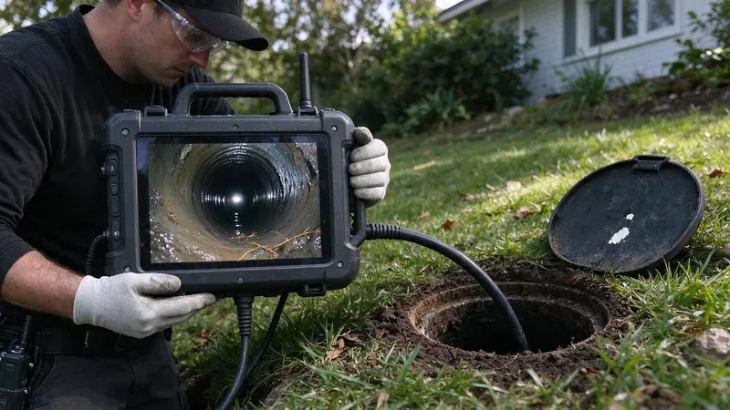

Plumbing Tips & Updates From Beau's Plumbing
 15Oct, 2026
15Oct, 2026Slab Leak Warning Signs Every Louisiana Homeowner Should Know
Most slab leaks run for months before anyone finds them. Here are the signs you can check yourself this week.
 6Oct, 2026
6Oct, 2026How to Protect Your Pipes Before the Next Louisiana Freeze
A burst line in a wall can dump hundreds of gallons overnight. Here is how to stop a Louisiana home from freezing up.
 27Sep, 2026
27Sep, 2026Hard Water in Louisiana: When a Water Softener Pays for Itself
The white crust on the faucet is the part you can see. Here is what hard water does inside the pipes, and when softening makes sense.
 18Sep, 2026
18Sep, 2026Tankless vs. Tank Water Heaters: What Works Best in Louisiana
Each type of water heater fits certain houses. Here is how to pick the better fit in Louisiana.
 9Sep, 2026
9Sep, 2026Kitchen Sink Backups: Causes, Prevention and Quick Solutions
Grease and coffee grounds combine with hard water scale inside kitchen drains. Here is how to clear a backup and stop it coming back.
 31Aug, 2026
31Aug, 2026Underground Pipe Damage: Common Causes and Modern Repair Solutions
Buried pipe fails out of sight. Here is what damages underground lines in Louisiana and how modern repairs work.
 22Aug, 2026
22Aug, 2026Hydro Jetting vs. Snaking: Which Drain Cleaning Method Do You Need?
A drain snake and a jetter fix different problems. Here is how to tell which one your line actually needs.

13Aug, 2026Why a Sewer Camera Inspection Belongs on Every Louisiana Home Inspection
A regular inspection does not look inside the sewer line. Here is why Louisiana buyers add a sewer scope before closing.
Have a plumbing question we did not cover?
Our team is happy to talk it through and give you a straight answer.